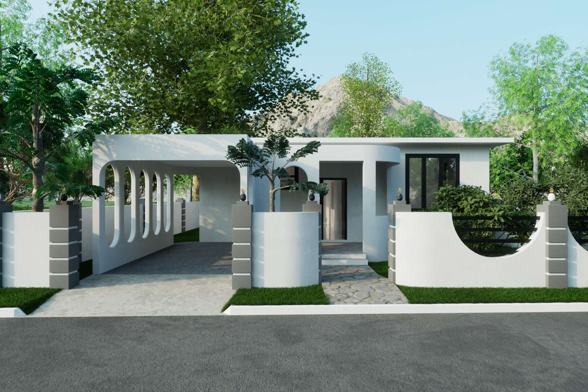
Ground-Up Residential Design · Visualization
Boscobel HeightsResidence.
This project began with a parcel of land and no pre-existing house design. Crio Creatives developed the residence from the ground up — shaping the plan, exterior character, circulation, landscape relationship and interior visual direction as one complete design.
Built from the site up.
The design uses a restrained white-and-charcoal palette, then relies on form rather than decoration for character. Rounded corners, deep arches and elongated openings soften the otherwise clean modern massing, giving the house a distinctive identity without making it visually heavy.
The covered carport is treated as part of the architecture rather than an add-on, repeating the same curved language seen at the entrance and facade. Black-framed windows and doors create strong contrast against the light exterior while keeping the elevations crisp.
Inside, the palette stays controlled and practical: bright floors and walls keep the spaces open, while dark cabinetry, black window frames and warm wood finishes add depth. Large openings and narrow vertical windows bring daylight through the plan and maintain a visual connection to the surrounding greenery.
- Soft Modern Geometry — Curved corners and repeated arched openings break up the straight lines and create a recognizable architectural language.
- Integrated Arrival — The carport, entry sequence, boundary treatment and walkway were composed to read as one approach to the house.
- Indoor / Outdoor Connection — Openings, garden edges and covered transitional spaces keep landscape and daylight present throughout the design.
Complete Design Set.
Eleven additional perspectives from the ground-up residential concept. Select any view to inspect it at full resolution.
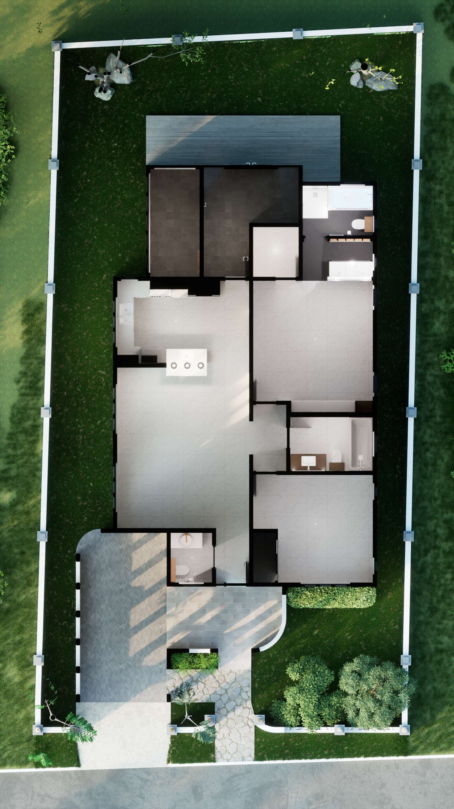
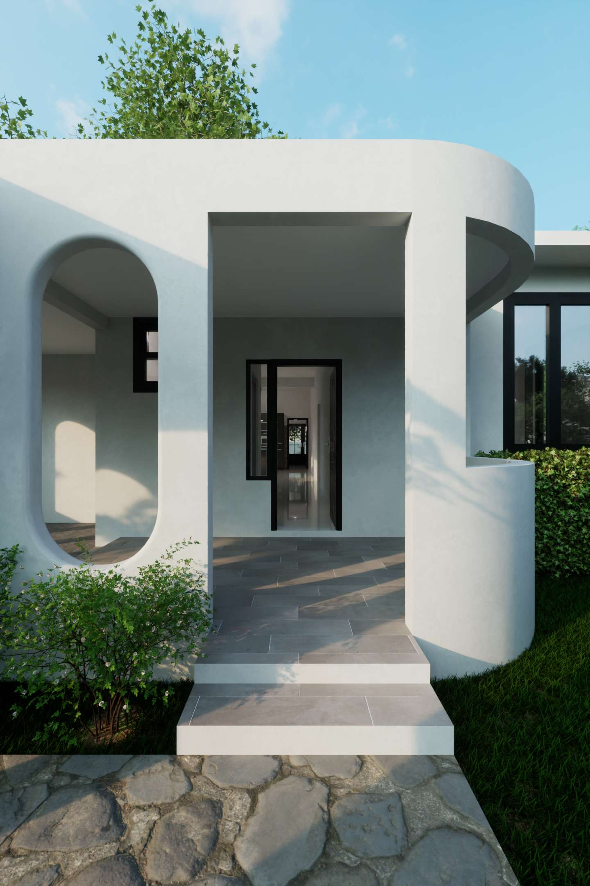
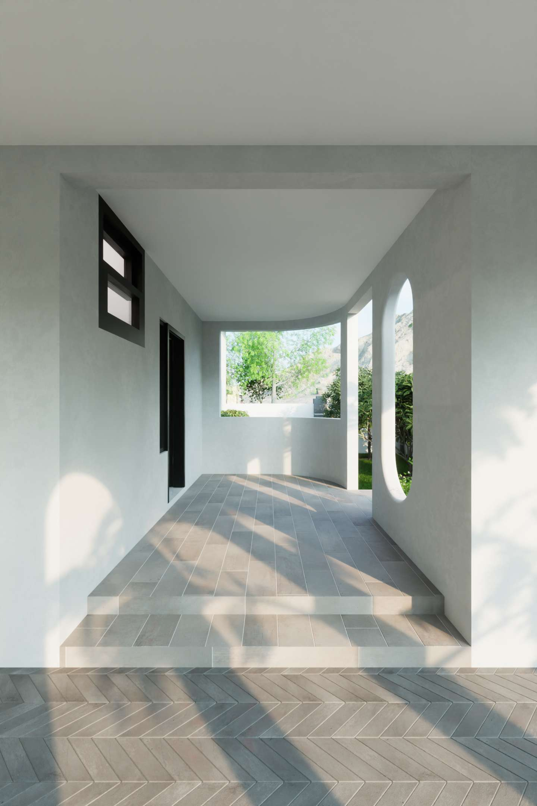
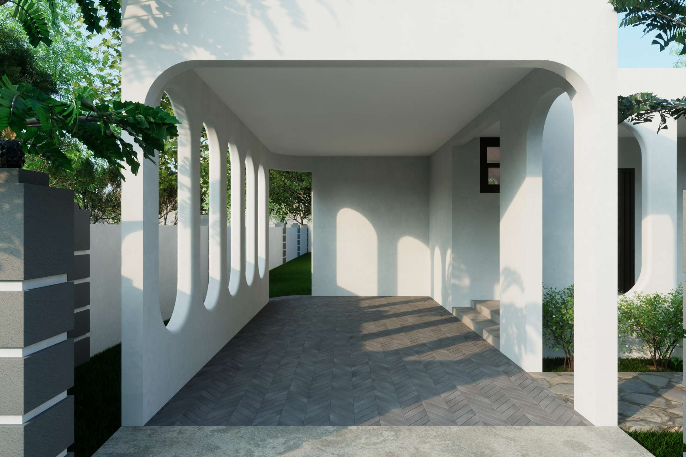
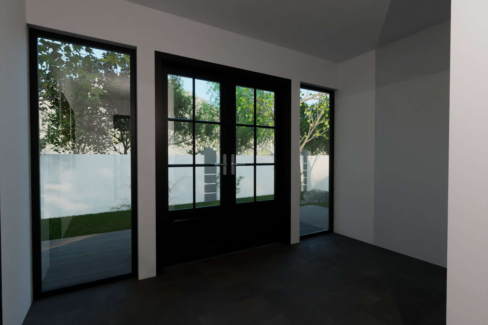
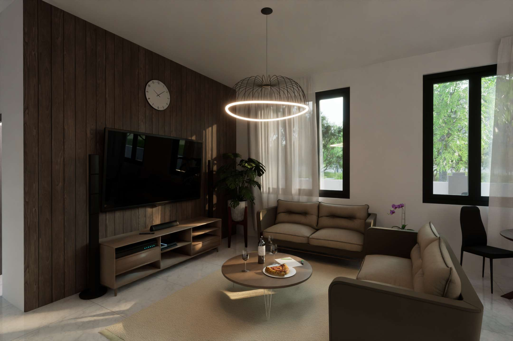
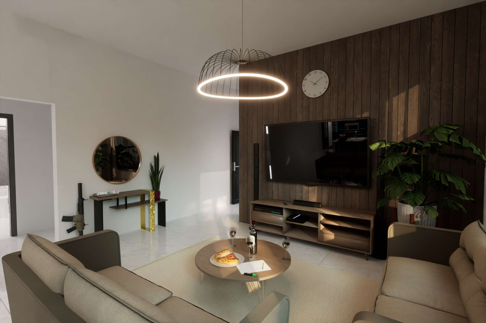
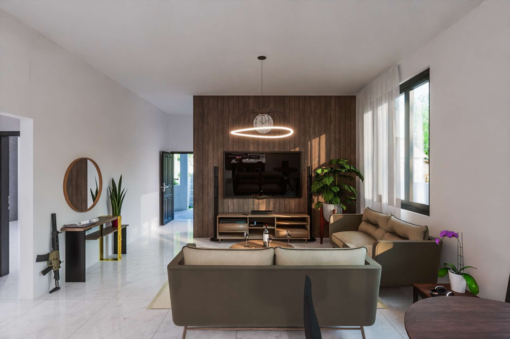
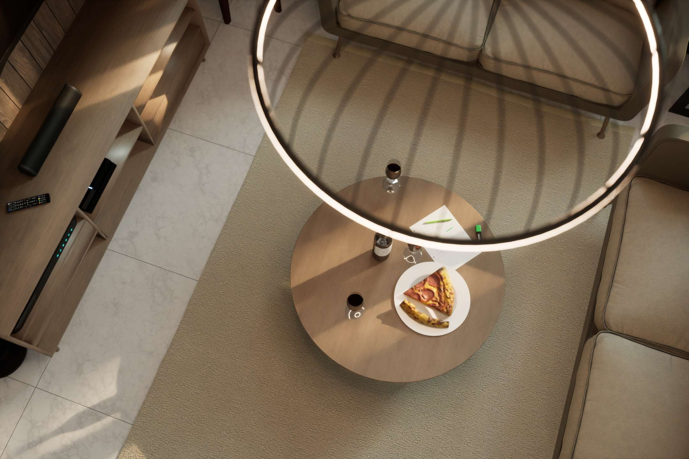
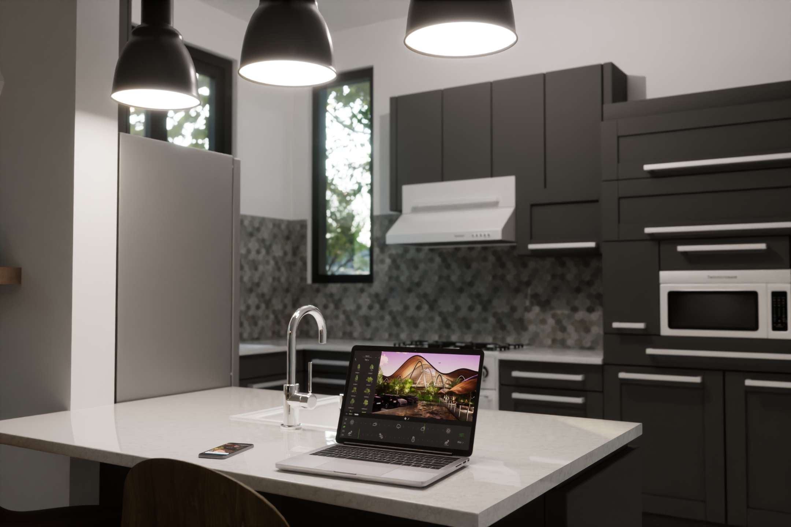
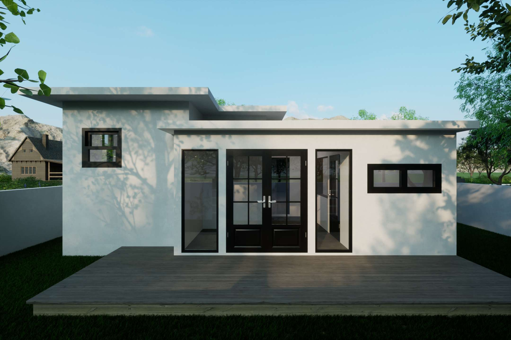